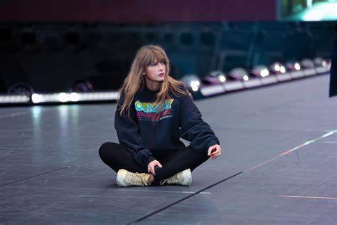

Bienvenidos al Portal de Taylor Swift
Descubre todo sobre la vida y carrera de Taylor Swift.
Acerca de Taylor Swift
Taylor Alison Swift (West Reading, Pensilvania; 13 de diciembre de 1989) es una cantante, compositora, productora discográfica, directora, actriz y empresaria estadounidense. Swift es una figura destacada de la música popular, conocida por sus composiciones biográficas Comezó a componer canciones a los 13 años, y su interpretación de "The Star-Spangled Banner" en el Abierto de Estados Unidos 2003 llamó la atención del mánager musical Dan Dymtrow, quien ayudó a Swift a conseguir un contrato de desarrollo artístico con RCA Records en Nashville, con el que consiguió grabar un demo en ese mismo año. Más tarde, firmó con Big Machine Records en 2005 para convertirse en cantante de country, siendo la artista más joven contratada por Sony Music Publishing. Lanzó seis álbumes de estudio bajo el sello, cuatro de ellos para la radio country, empezando con su álbum debut Taylor Swift (2006). Su siguiente álbum, Fearless (2008), exploró el country pop y sus sencillos «Love Story» y «You Belong with Me» la catapultó a la fama, siendo el álbum más premiado en la historia de la música country.7 En 2010, Speak Now trajo la influencia rock, vendiendo un millón de copias en su primera semana en los Estados Unidos. Mientras tanto, Red (2012) experimentó con elementos electrónicos y presentó la primera canción número uno del Billboard Hot 100 de Taylor, «We Are Never Ever Getting Back Together». Su quinto álbum, 1989 (2014) la alejo de su imagen country,8 acercándola al synth-pop respaldado por las canciones que encabezaron las listas «Shake It Off», «Blank Space» y «Bad Blood», que convirtieron a Taylor en la primera mujer en los cincuenta y seis años del Billboard Hot 100 en destronar a su propia canción y sustituirse a sí misma en el primer lugar.9 El escrutinio de los medios inspiró Reputation (2017) con un estilo a hip-hop, que logró que su sencillo «Look What You Made Me Do» llegara al número uno.
